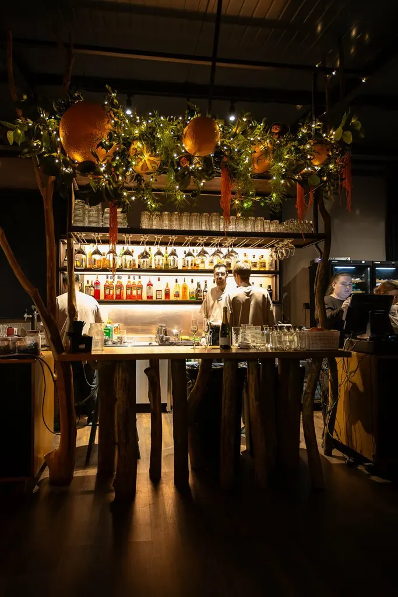
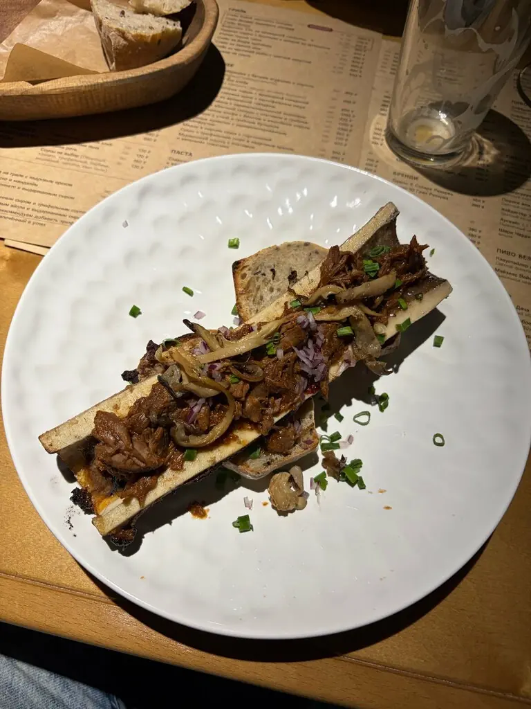
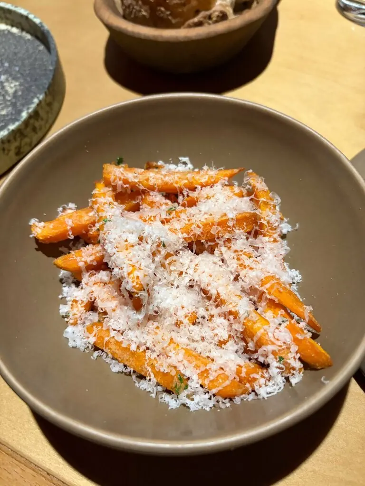
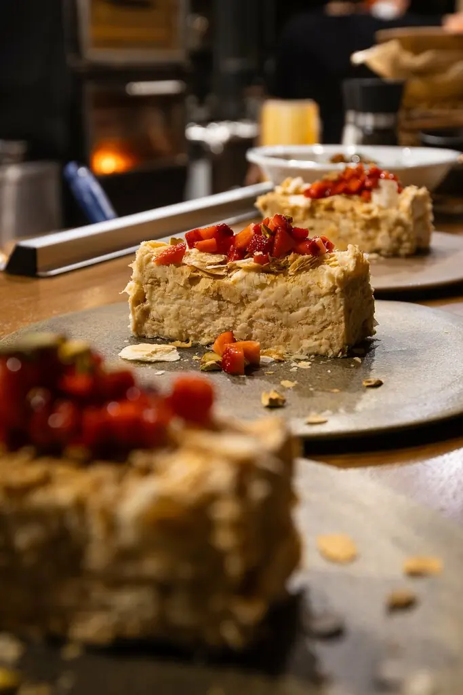
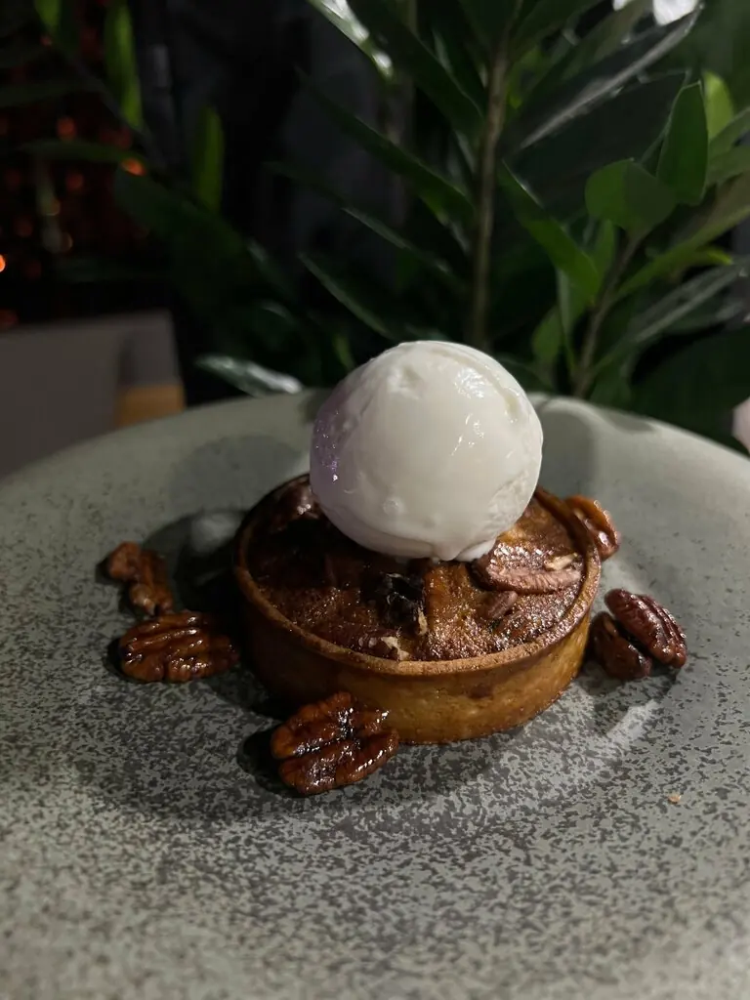
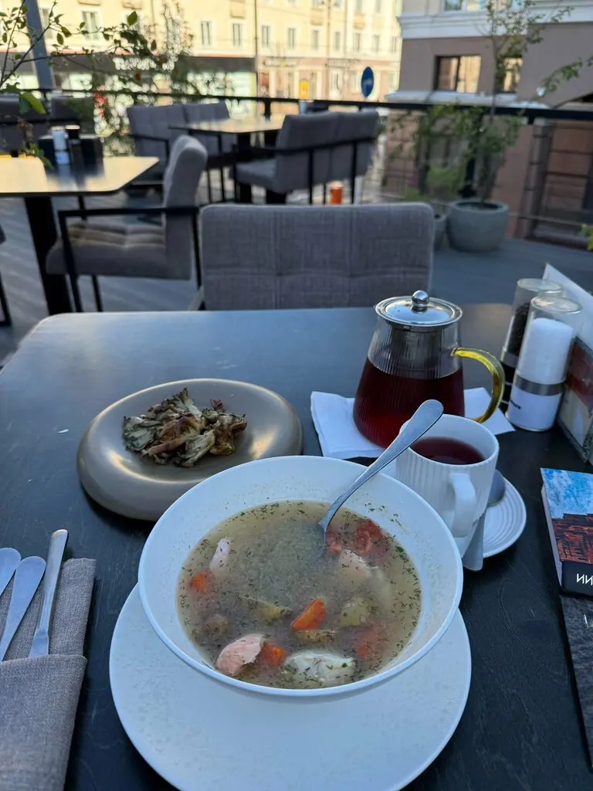

Томск+7 913 846-20-20
Уголёк
Гастро-бистро на проспекте Ленина. Огонь, тёмный зал и хлеб собственного производства.
4,9 · 448 оценок
Что тлеет сегодня
Мозговая кость с томлёной говядиной и вешенками
920 ₽Утиная ножка конфи с бататом и вишнёвым соусом
950 ₽Вителло тонато из говядины
690 ₽Брускетта с креветками и гуакамоле
720 ₽Салат с креветками и жареными баклажанами
790 ₽Борщ с томлёной говядиной
630 ₽Хлеб цельнозерновой своего производства
120 ₽Часть меню с Яндекс Карт, цены уточняйте у официанта.





Летом на улицу
Когда в Томске наконец тепло, столы выходят на террасу с видом на проспект. Зимой в зале тоже тепло: тёмное дерево и живые огоньки.
Отзывы
Очень приятное, атмосферное заведение. Красивая подача, вкусные блюда.Анастасия Ботальцева
Были на ужине с мужем. Очень вкусно, подача быстрая.Veronika S
Вкусно, атмосферно, вежливый персонал. Рекомендуем.Анастасия Палкина